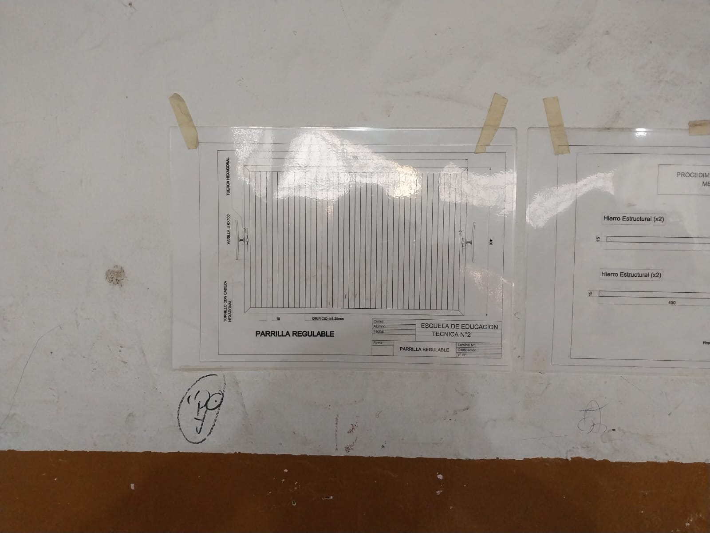
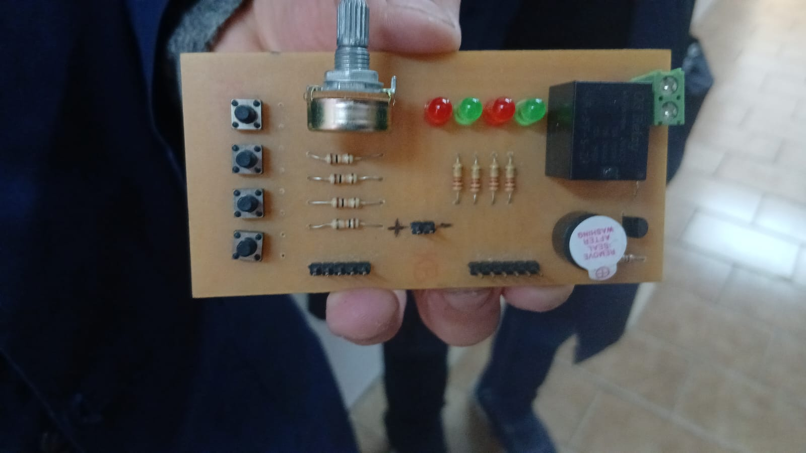

🔧 Proyectos y trabajos

Banco Pescador
Proyecto: Banco Pescador
Materia: Procedimientos tecnicos
Proyecto de construcción de un Banco Pescador. En esta actividad se trabaja con el diseño, la interpretación de planos y la construcción de las diferentes piezas que forman el banco. Realizado para sentarse para pescar lo que contiene son 4 maderas de 38cm cada una igual a las 4. Luego sera escofinada marcandola con un compass en los dos 2cm de cada punta. Luego se hace 2 lineas y en el medio de esas dos lineas se hace un agujero eso con cada punta y con cada madera luego se eligen 5 maderas distintas y dejas 4,8 cm haces 2 agujeros separando 2 cm de cada uno y luego se atornillan. Pd:todos los elementos tanto como mechas deben ser sacados del pañol. Alguna duda que no entiendan pregunten a los profes
Ver proyecto
Proyecto 2
Curso: 2° año
Materia: taller
La Parrilla es un elemento de hierros con estas medidas. Se cortan dos fierros de 60cm y dos fierros de 40cm. Luego se mide en 90 grados y con un arco de sierra cortan los fierros. Luego con los 2 fierros de 60 por la punta que cortaste dejas 2 cm en cada agujero y los agujereas. Luego tenes que buscar unas varillas y dependiendo lo que te diga el profe de cuanto tenes que cortar las varillas. Luego en los fierros de 40 por la parte de afuera haces un agujero por la mitad no entero por la parte de arriba hacia abajo si va entero. Luego el profe te va a soldar la parrilla y despues vas a buscar 2 varillas grandes para las patas de aprox 25cm y depende la medida de las patas lo giras. Y por ultimo le pones un tornillo y ya quedaParrilla
Ver proyecto
Placa-Arduino
Curso: 3° año
Materia: Sistemas tecnologicos.
Placa-Arduino.
Ver proyecto